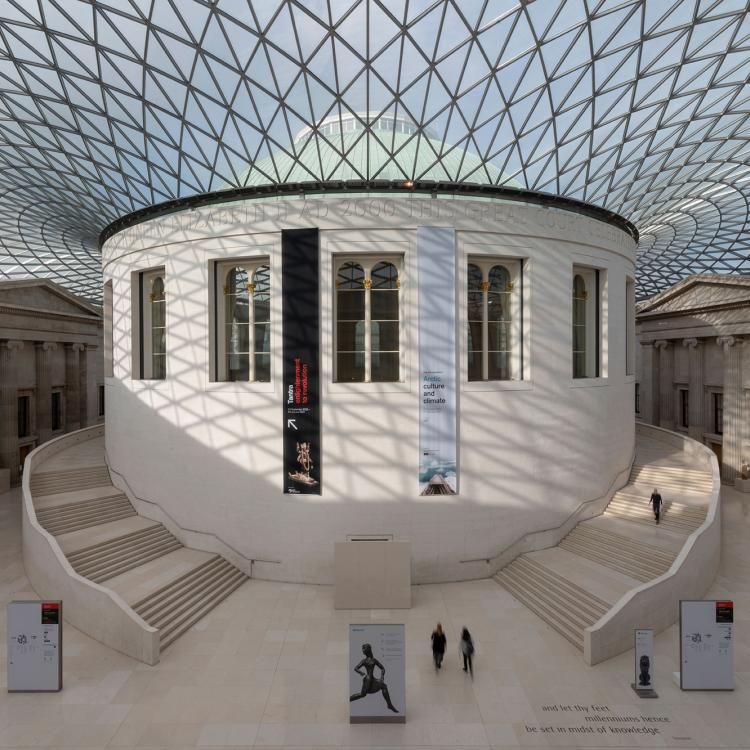
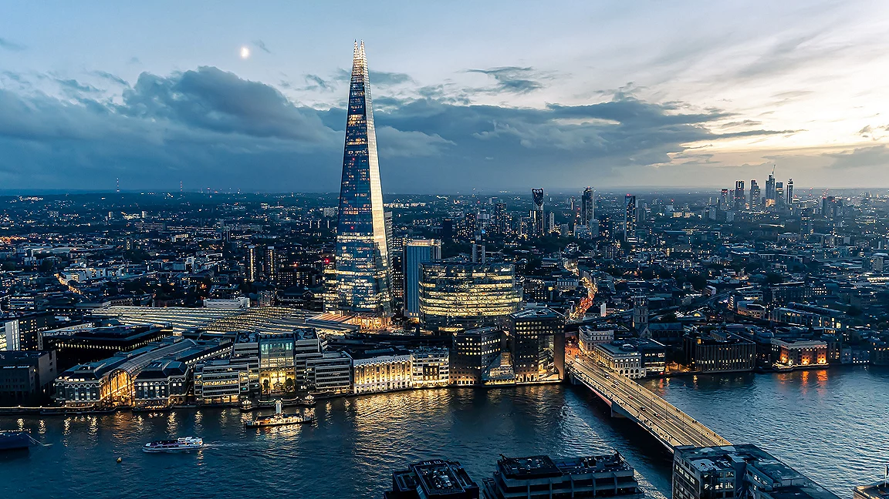

Royal
Buckingham Palace
Both a working royal palace and the monarch's official London residence. Don't miss the Changing of the Guard ceremony.
A curated shortlist. Filter by category, search by name, save your favourites for later.
Both a working royal palace and the monarch's official London residence. Don't miss the Changing of the Guard ceremony.

MuseumA vast public collection devoted to art, culture, and human history, and home to the Rosetta Stone.

ViewpointA 95 storey tower with 360 degree viewing platforms, the highest vantage point in Western Europe.
 Historic
Historic
A historic castle on the north bank of the Thames, and the home of England's Crown Jewels.